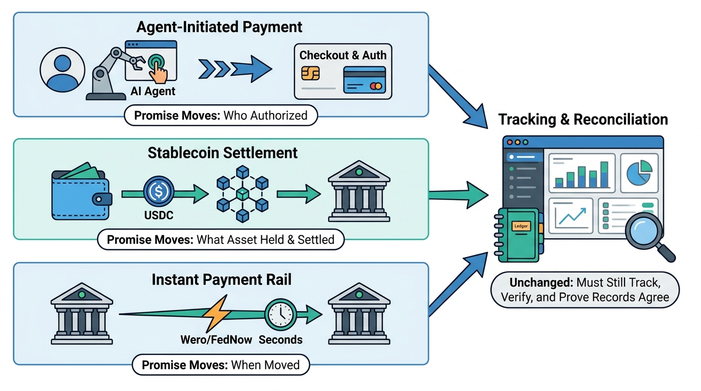

Part X — BETS: Where Stripe and Adyen Diverge
What Is Moving: Agents, Stablecoins and Instant Payments in 2026
AI-assisted: researched and written with Claude Code; illustrations generated with Gemini. How this works

Image generated by Google Gemini (gemini-3-pro-image-preview)